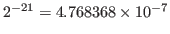
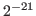
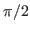
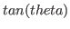
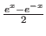
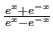

Subsections
most-positive-fixnum [constant]
-
- #x1fffffff=536,870,911
most-negative-fixnum [constant]
-
- -#x20000000= -536,870,912
short-float-epsilon [constant]
-
-
A floating point number on machines with IEEE floating-point format is
represented by 21 bit mantissa with 1 bit sign and 7 bit exponent with
1 bit sign.
Therefore, floating point epsilon is
.
single-float-epsilon [constant]
-
- same as short-float-epsilon, .
long-float-epsilon [constant]
-
- same as short-float-epsilon since
there is no double or long float. .
pi [constant]
-
- , actually 3.14159203, not 3.14159265.
2pi [constant]
-
-
pi/2 [constant]
-
- 
-pi [constant]
-
- -3.14159203
-2pi [constant]
-
-
-pi/2 [constant]
-
-
numberp object [function]
-
-
T if object is number, namely integer or float.
Note that characters are also represented by numbers.
integerp object [function]
-
-
T if object is an integer number.
A float can be converted to an integer by
round, trunc and ceiling functions.
floatp object [function]
-
- T if object is a floating-point number.
An integer can be converted to a float by the float function.
zerop number [function]
-
- T if the number is integer zero or float 0.0.
plusp number [function]
-
- equivalent to ( number 0).
minusp number [function]
-
- equivalent to ( number 0).
oddp integer [function]
-
-
The argument must be an integer.
T if integer is odd.
evenp integer [function]
-
-
The argument must be an integer.
T if integer is an even number.
/= n1 n2 &rest more-numbers [function]
-
-
Both n1, n2 and all elements of more-numbers must be numbers.
T if no two of its arguments are numerically equal, NIL otherwise.
= num1 num2 &rest more-numbers [function]
-
-
Both n1 and n2 and all elements of more-numbers must be numbers.
T if n1, n2 and all elements of more-numbers are the same in value, NIL otherwise.
num1 num2 &rest more-numbers [function]
-
-
Both n1 and n2 and all elements of more-numbers must be numbers.
T if n1, n2 and all elements of more-numbers are in monotonically decreasing order, NIL otherwise.
For numerical comparisons with tolerance, use functions prefixed
by eps as described in the section 16.
num1 num2 &rest more-numbers [function]
-
-
Both n1 and n2 and all elements of more-numbers must be numbers.
T if n1, n2 and all elements of more-numbers are in monotonically increasing order, NIL otherwise.
For numerical comparisons with tolerance, use functions prefixed
by eps as described in the section 16.
num1 num2 &rest more-numbers [function]
-
-
Both n1 and n2 and all elements of more-numbers must be numbers.
T if n1, n2 and all elements of more-numbers are in monotonically nonincreasing order, NIL otherwise.
For numerical comparisons with tolerance, use functions prefixed
by eps as described in the section 16.
num1 num2 &rest more-numbers [function]
-
-
Both n1 and n2 and all elements of more-numbers must be numbers.
T if n1, n2 and all elements of more-numbers are in monotonically nondecreasing order, NIL otherwise.
For numerical comparisons with tolerance, use functions prefixed
by eps as described in the section 16.
Following functions request arguments to be integers.
mod dividend divisor [function]
-
-
returns remainder when dividend is divided by divisor.
(mod 6 5)=1, (mod -6 5)=-1, (mod 6 -5)=1, (mod -6 -5)=-1.
1- integer [function]
-
-
The compiler assumes the argument to be an integer.
 is returned.
is returned.
1+ integer [function]
-
-
Arguments to 1+ and 1- must be an integer.
is returned.
logand &rest integers [function]
-
- bitwise-and of integers.
logior &rest integers [function]
-
- bitwise-inclusive-or of integers.
logxor &rest integers [function]
-
- bitwise-exclusive-or of integers.
logeqv &rest integers [function]
-
-
logeqv is equivalent to (lognot (logxor ...)).
lognand &rest integers [function]
-
- bitwise-nand of integers.
lognor &rest integers [function]
-
- bitwise-nor of integers.
lognot integer [function]
-
- bit reverse of integer.
logtest integer1 integer2 [function]
-
-
T if (logand integer1 integer2) is not zero.
logbitp index integer [function]
-
-
T if indexth bit of integer (counted from the LSB) is 1,
otherwise NIL.
ash integer count [function]
-
-
Arithmetic Shift Left.
If count is positive, shift direction is left,
and if count is negative,
integer is shifted to right by abs(count) bits.
ldb target position width [function]
-
-
LoaD Byte.
Byte specifier for ldb and dpb does not exist in EusLisp.
Use a pair of integers instead.
The field of width bits at position within target
is extracted. For example, (ldb #x1234 4 4) is 3.
dpb value integer position width [function]
-
-
DePosit byte.
Width bits of value is put in integer
at positionth bits from LSB.
+ &rest numbers [function]
-
- returns the sum of numbers.
- num &rest more-numbers [function]
-
-
If more-numbers are given, they are subtracted from num.
Otherwise, num is negated.
* &rest numbers [function]
-
- returns the product of numbers.
/ num1 num2 &rest more-numbers [function]
-
-
num1 is divided by num2 and more-numbers.
The result is an integer if all the arguments are integers,
and an float if at least one of the arguments is a float.
abs number [function]
-
- returns absolute number.
round number [function]
-
-
rounds to the nearest integer.
(round 1.5)=2, (round -1.5)=2.
floor number [function]
-
-
rounds to the nearest smaller integer.
(floor 1.5)=1, (floor -1.5)=-2.
ceiling number [function]
-
-
rounds to the nearest larger integer.
(ceiling 1.5)=2, (ceiling -1.5)=-1.
truncate number [function]
-
-
rounds to the absolutely smaller and nearest integer.
(truncate 1.5)=1, (truncate -1.5)=-1.
float number [function]
-
-
returns floating-point representation of number.
max &rest numbers [function]
-
-
finds the maximum value among numbers.
min &rest numbers [function]
-
-
finds the minimum number in numbers.
make-random-state &optional state [function]
-
-
creates a fresh object of type random-state suitable for use as the value of *random-state*.
If state is a random state object, the new-state is a copy of that object. If state is NIL, the new-state is a copy of the current *random-state*. If state is T, the new-state is a fresh random state object that has been randomly initialized.
random range &optional (randstate *random-state*) [function]
-
-
Returns a random number between 0 or 0.0 and range.
If range is an integer,
the result is truncated to an integer.
Otherwise, a floating value is returned.
Optional randstate can be specified
to get predictable random number sequence.
There is no special data type for random-state,
and it is represented with an integer vector of two elements.
incf variable &optional (increment 1) [macro]
-
-
variable is a generalized variable.
The value of variable is incremented by increment,
and it is set back to variable.
decf variable &optional decrement [macro]
-
-
variable is a generalized variable.
The value of variable is decremented by decrement,
and it is set back to variable.
reduce func seq [function]
-
-
combines all the elements in seq using the binary operator func.
For an example, (reduce #'expt '(2 3 4)) = (expt (expt 2 3) 4)=4096.
rad2deg radian [function]
-
- Radian value is converted to degree notation.
#R does the same thing at read time.
Note that the official representation of angle in EusLisp is radian
and every EusLisp function that accepts angle argument
requests it to be represented by radian.
deg2rad degree [function]
-
- Conversion from degree to radian.
Also accomplished by #D reader's dispatch macros.
sin theta [function]
-
- theta is a float representing angle by radian.
returns
.
cos theta [function]
-
- theta is a float representing angle by radian.
returns
 .
.
tan theta [function]
-
- theta is a float representing angle by radian.
returns
.
sinh x [function]
-
- hyperbolic sine, that is,
.
cosh x [function]
-
- hyperbolic cosine, that is,
.
tanh x [function]
-
- hyperbolic tangent, that is,
.
asin number [function]
-
- arc sine of number.
acos number [function]
-
- arc cosine of number.
atan y &optional x [function]
-
-
When atan is called with one argument, its arctangent is calculated.
When called with two arguments, is returned.
asinh x [function]
-
- hyperbolic arc sine.
acosh x [function]
-
- hyperbolic arc cosine.
atanh x [function]
-
- hyperbolic arc tangent.
sqrt number [function]
-
- returns square root of number.
log number [function]
-
- returns natural logarithm of number.
exp x [function]
-
- returns exponential, .
expt a x [function]
-
-
returns xth power to a.
Travis CI User
2016-12-19